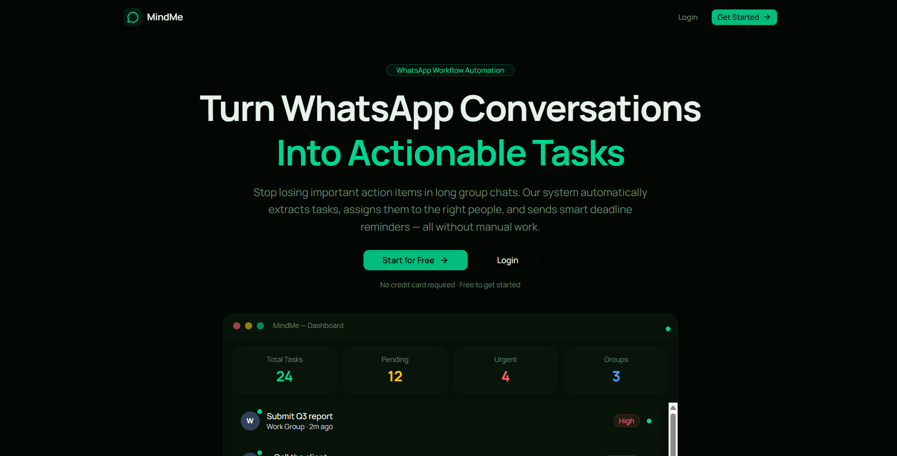

B2B task automation platform transforming unstructured WhatsApp logs into operational workspaces

Modern operational teams spend hours collaborating inside WhatsApp groups. However, vital action items, client details, and commitments get buried under hundreds of messages. Deadlines are routinely forgotten, task ownership remains ambiguous, and managers have zero central visibility on progress.
MindMe transforms WhatsApp from a simple communication app into an active operational workspace. By parsing group chats in real-time, the platform automatically detects actionable work, assigns ownership, schedules reminders, and tracks execution states, creating complete organizational accountability without forcing team members to change their existing chat workflow.
Designed as a commercial multi-tenant SaaS, MindMe isolates each company's workspace. Every logged task, webhook channel, custom reminder, dashboard analytic, and notification layout is strictly scoped by organization ID.
This layout ensures that multiple corporate teams share the same cloud hosting infrastructure and Sanity CMS datastore securely while guaranteeing complete data isolation and zero cross-tenant leakages at the query layer.
Administrators can monitor and link several WhatsApp groups through a central dashboard. The system tracks metrics to evaluate group activities: message count trends, task extraction rates, members completion ratios, group health parameters, active members indices, and last activity log times.
We designed a real-time extraction pipeline using GPT-4o-mini that parses conversation contexts and logs items in under two seconds:
An event-driven scheduler continuously monitors task deadlines. When the scheduler identifies upcoming limits, overdue cards, or unassigned items, it dispatches reminders through WhatsApp and email channels dynamically.
Users can perform updates directly inside the WhatsApp conversation window. Replying with specific indicators triggers automation commands: 1 marks a task complete, 2 snoozes it for two hours, and 3 reassigns the ticket — requiring no dashboard logins.
Organizations enforce security policies using Role-Based Access Control (RBAC). Three distinct scopes define user capabilities:
Every operational mutation writes to an immutable event ledger. The timeline records details like groups connecting, tasks being created/completed/snoozed, and reminders being dispatched, generating a clean audit trail.
The loop operates continuously as an active feedback system, keeping teams aligned without manual oversight.
Next.js, React, TS, Tailwind, Shadcn
Next.js API, Sanity, GROQ
GPT-4o-mini, WHAPI, Vercel, Cron